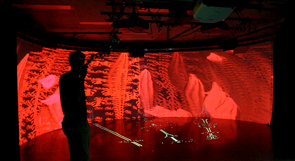
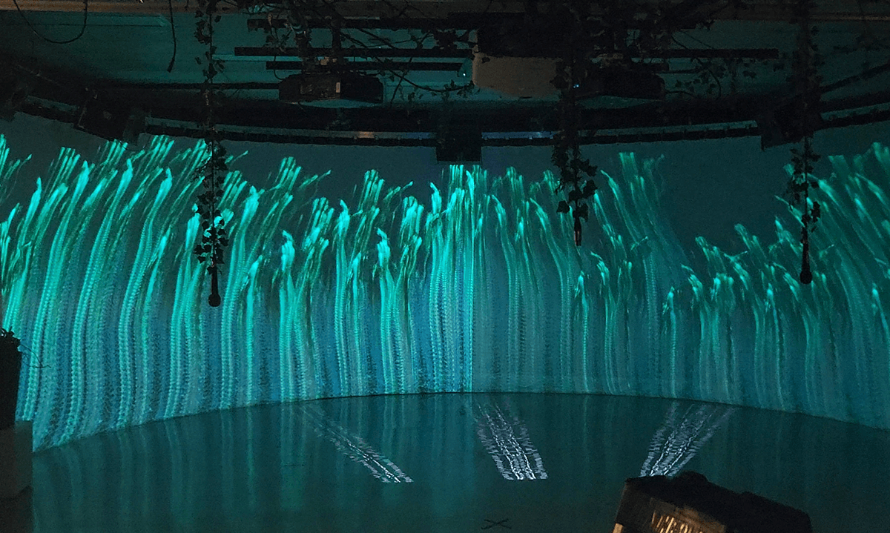
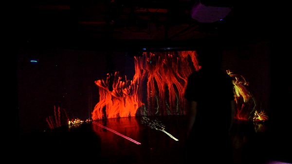

<!DOCTYPE html>
<html lang="en">
<head>
    <meta charset="UTF-8">
    <meta name="viewport" content="width=device-width, initial-scale=1.0">
    <title>Micro environnement</title>
    <link rel="stylesheet" href="style.css">
</head>
<body>


</body>
</html>

    <!-- Header Section -->
    <header class="header">
        <div class="logo">
            <h1><a href="index.html">Isaak Paul-Rivest</a></h1>

        </div>
        <nav class="navigation">
            <ul>
                <li><a href="project.html" class="link">Projects</a></li> <!-- Clickable Text -->                
                <li><a href="contact.html" class="link">Contact</a></li> <!-- Clickable Text --> 
                <li><button id="invert-toggle" class="circle-toggle"></button></li> <!-- Circle button -->
               
            </ul>
        </nav>

    </header>

      <!-- Content Section (Carousel + Text) -->
      <div class="content-container">
        <!-- Carousel Section -->
        <div class="carousel">
            <div class="carousel-images">
                
                
                
                


                <!-- Add more images as needed -->
            </div>
            <button class="prev">&#10094;</button>
            <button class="next">&#10095;</button>
        </div>

   
        <div class="text-section">
            <h1>Micro Environnement</h1>
                <br>
                <br>
            <p>MICRO – Environnement est une installation interactive d’art génératif et de trame sonore basée sur des données reçues de microphones suspendus à différents endroits dans la salle. L’installation utilise un écran incurvé pour projeter de l’art génératif en temps réel, créant une expérience visuelle immersive. </p>
            <br>
                        <p>Chaque mouvement, chaque voix est capturé et transformé en art visuel en temps réel, permettant aux utilisateurs de participer activement à la création artistique. Les motifs visuels se déploient sur la surface courbée de l’écran, créant un spectacle visuel captivant.</p>
                        <br>
                        <br>
                        <p style="font-size: 12px;">Collaborateur: Raphaël Bernier, Maxime Simard</p>

                    </div>

    </div>
           <!-- Link to your JavaScript file -->
           <script src="script.js"></script>  <!-- Ensure this path is correct -->
</html>
